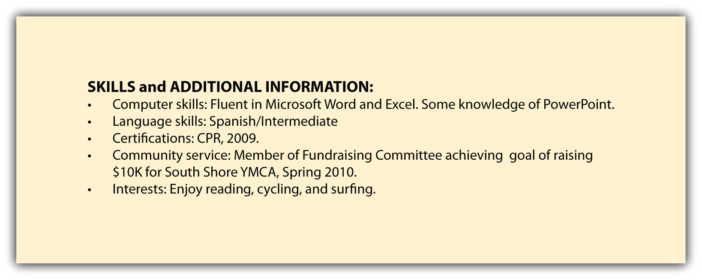
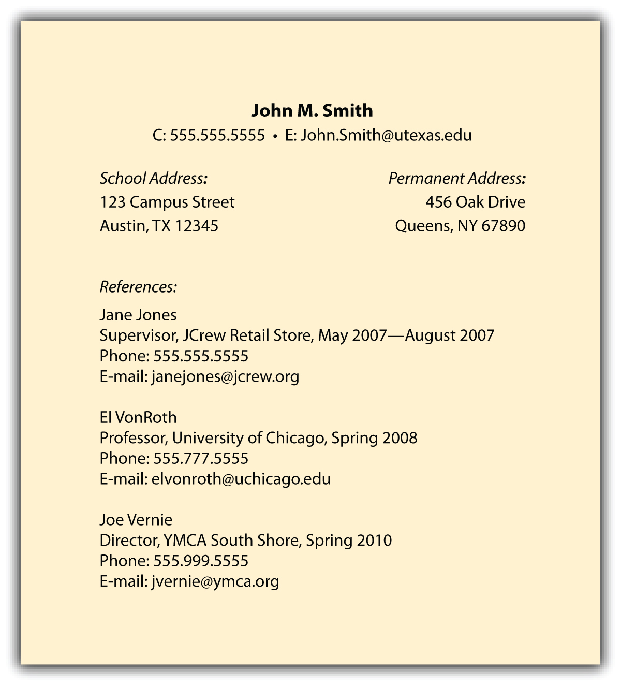

Skills and Additional Information
This section of your résumé should include, but not be limited to, the following information:
- Computer skills: Most employers expect Microsoft Word, Excel, and PowerPoint, but include additional software knowledge (e.g., Dreamweaver).
- Language skills: Include your honest level of fluency (e.g., Spanish, fluent, French, beginner).
- Community service: Include any volunteer work, such as park clean-ups, walk-a-thons for various causes, fundraising events of any kind. Be specific about your responsibilities and your results including: dollars raised, hours spent, leadership position, end-user experience (e.g. fund-raising efforts reached over $20K, providing for five developmentally disabled students and their parents to travel to Florida to swim with the dolphins.)
- Interests: This information can help to build rapport with interviewers. It’s best to keep it simple and include things that are truly of interest to you such as reading, movies, and physical fitness (in general) or tennis, football, softball (specifically). It’s true that the “Interests” section is not a core piece of information, but the vast majority of interviewers enjoy reviewing this, and the rapport you build can be helpful!
You can include additional information:
- Licenses and certifications: Individuals can achieve literally hundreds of professional licenses in the areas of health care, finance, real estate, insurance, and so forth. For a complete list, Google professional licenses, and you will be able to identify if you should include any on your résumé. Examples include Chartered Financial Analyst (CFA)To become a CFA, a person needs to take the course and pass it through the CFA Institute. This course is known to be rigorous, but you can benefit from it in the long run because you will be a respected securities professional. Level I, Licensed Real Estate Agent, and so forth.
Important note: Never misrepresent any information on your résumé. If you have knowledge of another language, qualify your knowledge as fluent, intermediate, or beginner. If you don’t speak a language other than English, do not include a bullet point about language because you might not know the language capabilities of your interviewers.
Some résumé readers differ on this, but listing your interests can help develop rapport with your résumé reader and interviewer. No matter what the skill level of the interviewer, having a common interest can always begin a great conversation.
An example of information listed in this section could include the following.

References
One of the famous last lines of a résumé is “References furnished upon request.” This is not necessary because employers can simply ask for references when they want them. However, a proactive, impressive strategy would be to create a single-page document that includes the following information:
- Your header (so it’s a matched set with the résumé), including your name, address, and contact information
- Your reference’s name
- Your reference’s company and title
- Your reference’s relationship to you (e.g., manager, peer, vendor, and so forth)
- Your reference’s contact information, including their e-mail address and phone number
Do not widely distribute this information because it contains the contact information of your references, which you should treat as confidential. However, having the list prepared enables you to quickly share this information with prospective employers upon request.
Help your references help you by notifying them that they can expect a call and by highlighting the most important qualities you want them to mention.
An example of this document could include the following.

Key Takeaways
- Skills and additional information add another dimension to any résumé. Recruiters should know your computer skills and any language skills you may have. This section of your résumé also presents a great opportunity to share information about any community service work you’ve done.
- Listing your interests often helps build rapport with recruiters and interviewers.
- Misrepresenting your accomplishments or abilities is unethical. Many otherwise-qualified candidates often find themselves in uncomfortable positions when they have misrepresented even the slightest item on their résumé.
- The names of your references do not belong on a résumé.
- It’s not necessary to include the line “References furnished upon request.”
- Having a reference document is very helpful when conducting a proactive and efficient job search.
Exercises
- Draft this section of your résumé and include all the details mentioned in this chapter.
- Qualify your computer and language skills as fluent, familiar, or having some knowledge. If you speak only one language, don’t include this information on your résumé.
- Identify three or four individuals who can serve as your references, and get their permission to give their names and contact information to prospective employers.
- Speak to your references in advance and let them know about your career goals and which companies you are targeting. You may also ask that they emphasize one particular skill over another (e.g., that you pay great attention to detail or have strong analytical skills).
- When you are interviewing with a specific company, let your references know in advance that they may be contacted, and ask that they let you know if they are contacted.
- Thank your references.